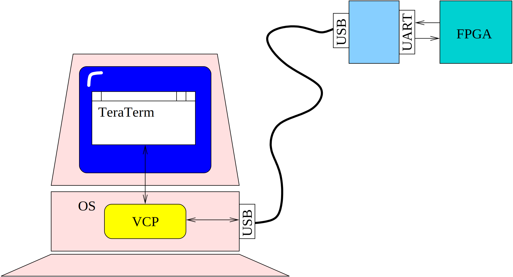
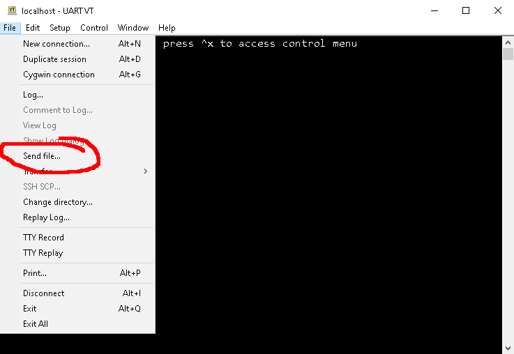
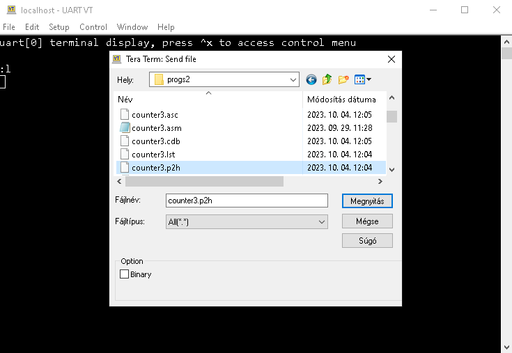
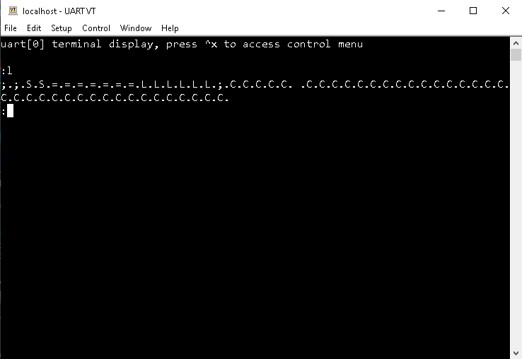

Index | Fejlesztés Development | CPU | Számítógép Computer | Assembler | Monitor | Függvények Library
Parancsok: Commands: help | ver | mem | dump | load | go | reg | rX,sp,lr,pc,f
A monitor program egy egyszerű firmware, amely lehetővé teszi az alkalmazói programnak a betöltését a számítógép memóriájába. Mivel a PMon a p2223 CPU utasításait felhasználva íródott, és a felhasználóval az UART periférián keresztül tartja a kapcsolatot, ezért csak a p2223 típusú CPU-t tartalmazó, v2 típusú számítógépen használható. The monitor program is a simple firmware that allows the application program to be loaded into the computer's memory. Since PMon is written using the instructions of the p2223 CPU and communicates with the user via the UART peripheral, it can only be used on v2 type computer with p2223 type CPU.
A számítógép UART perifériájához az FPGA kártyán egy USB-UART átalakító van kapcsolva, amelynek az USB portját összeköthetjük egy PC-vel. Az átalakító a PC operációs rendszere számára egy VCP (Virtual COM Port) eszközként látszik, amely aszinkron soros perifériaként használható. A PC-n indítsunk el egy terminál emulátor programot (pl. TeraTerm, putty, stb.) és nyissuk meg az FPGA kártya csatlakoztatásakor létrejövő COM portot. Állítsuk be a 115200,N,8,1 paramétereket. A USB-UART converter is connected to the UART peripheral of the FPGA board, whose USB port can be connected to a PC. The converter appears to the PC operating system as a VCP (Virtual COM Port) device, which can be used as an asynchronous serial peripheral. On the PC, start a terminal emulator program (e.g. TeraTerm, putty, etc.) and open the COM port created when the FPGA board is connected. Set the parameters to 115200,N,8,1.

A PMon egy parancssoros program, amely a prompt kiírása után egy parancs begépelését várja. Az ENTER lenyomása után értelmezi a beírt utasítást és végrehajtja a megfelelő műveletet. PMon is a command-line program that waits for a command to be typed after displaying a prompt. After pressing ENTER, it interprets the entered command and performs the appropriate action.
A parancsok egy szóból állnak, amelyet szóközzel elválasztva paraméter(ek) követhet(nek). A paramétereket szóközzel kell elválasztani. Commands consist of a single word, followed by parameter(s), separated by a space. Parameters must be separated by a space.
A parancsok a legtöbb esetben rövidíthetőek a szó első betűjével. A paraméterek általában számok, amelyeket hexadecimális számrendszerben kell beírni, 0x, H, $ és egyéb jelek nélkül. Tagolásként a beírt hexadecimális számokba írhatunk . vagy _ jeleket, ezeket a monitor figyelmen kívül hagyja. Az A..F értékű jegyeket kis és nagybetűvel is beírhatjuk. Commands can be abbreviated in most cases with the first letter of the word. Parameters are usually numbers that should be entered in hexadecimal, without 0x, H, $, and other symbols. As a separator, you can enter . or _ in the entered hexadecimal numbers, which are ignored by the monitor. The characters A..F can be entered in both upper and lower case letters.
A monitor által kiírt adatok mindig hexadecimális számrendszerben, nagybetűvel íródnak ki. A könnyebb olvashatóság érdekében a monitor által kiírt 32 bites értékek hexadecimális alakjában négy jegyenként egy _ jel van. The data displayed by the monitor is always in hexadecimal, in uppercase. For easier readability, the 32-bit values displayed by the monitor have a _ sign every four digits in hexadecimal format.
Kiírja a használható parancsok listáját és a szükséges, illetve lehetséges paramétereket. Lists the available commands and the required and possible parameters.
PMonitor v1.1 (cpu: v2.2.7) :help m[em] addr [val] Get/set memory d[ump] start end Dump memory content l[oad] Load hex file to memory g[o]|run [addr] Run from address r[eg[s]] Print registers rX [val] Get/set RX sp [val] Get/set R13 lr [val] Get/set R14 pc [val] Get/set R15 f [val] Get/set flags v[er] Print pmon and cpu version h[elp],? Help :Kiírja a monitor program és a CPU verzióját, valamint a CPU feature regisztereinek az értékét: Lists the monitor program and CPU version, and the values of the CPU feature registers:
:ver pmon: 1.4 cpu: 2.2.10 feat1: 0000000F feat2: 00000000 :Memória egy adott című rekeszének vizsgálata, vagy módosítása. Az első paraméter a vizsgált rekesz címe (hexadecimálisan). Ha a második paramétert nem adjuk meg, akkor a parancs a megadott című szót írja ki (a címmel együtt), ha megadjuk a második paramétert, akkor először az érték a memóriába kerül, majd ezután íródik ki (a már módosított) memória tartalom. Examine or modify a memory location with a given address. The first parameter is the address of the location to be examined (in hexadecimal). If the second parameter is not specified, the command prints the specified address (including the address), if the second parameter is specified, the value is first placed in memory, and then the (already modified) memory content is printed.
:m 1 0000_0001 01D2_0093 :m 1 deadbeef 0000_0001 DEAD_BEEF :Egy adott memóriaterület tartalmát listázza ki. A kezdőcímet kötelező megadni. Ha a vég címet nem adjuk meg, akkor 17 egymás utáni szó értéke íródik ki. Lists the contents of a given memory area. The starting address is required. If the ending address is not specified, then the values of 17 consecutive words are printed.
:d 10 0000_0010 0000_000A 0000_0011 0000_0000 0000_0012 01A4_0001 0000_0013 01F2_0003 0000_0014 0000_0000 0000_0015 0DED_0000 0000_0016 0D1D_0000 0000_0017 0D2D_0000 0000_0018 0D3D_0000 0000_0019 0710_0014 0000_001A 0720_FF20 0000_001B 001F_0000 0000_001C 002F_0000 0000_001D 0018_0200 0000_001E 11F2_0029 0000_001F 0710_0014 0000_0020 0030_0000 :d 10 14 0000_0010 0000_000A 0000_0011 0000_0000 0000_0012 01A4_0001 0000_0013 01F2_0003 0000_0014 0000_0000 :Lefordított alkalmazói program betöltése a memóriába. A parancsnak nincs paramétere, a betöltéshez szükséges adatok a lefordított fájlban vannak. A parancs p2h formátumú fájl tartalmát várja, ezt az assembler segítségével állíthatjuk elő. Loading a compiled application program into memory. The command has no parameters, the data required for loading is in the compiled file. The command expects the contents of a file in p2h format, which can be generated using the assembler.
A parancs kiadása után várakozik, a fájl tartalmát a terminálon kell elküldeni. Erre használjuk a terminál emulátor megfelelő funkcióját. TeraTerm esetén pl. a File menü Send file pontja használható: After issuing the command, it waits, the contents of the file must be sent to the terminal. For this, we use the appropriate function of the terminal emulator. In the case of TeraTerm, for example, the File menu item Send file can be used:

Válasszuk ki a lefordított programból készült .p2h kiterjesztésű fájlt: Select the file with the .p2h extension made from the compiled program:

A program a soros vonalon elküldi a fájl tartalmát. A load parancs értelmezi a fájlban lévő rekordokat, ezeknek a típusát kiírja a terminálra. A memória tartalmat meghatározó rekordoknak megfelelően módosítja a memóriát. A fájl végét jelző rekord után kilép, és újra megjelenik a monitor promptja: The program sends the contents of the file on the serial line. The load command interprets the records in the file, and prints their types to the terminal. It modifies the memory according to the records that define the memory contents. After the record indicating the end of the file, it exits, and the monitor prompt reappears:

Ez a parancs a felhasználói programot indítja el a megadott címtől. Ha a program visszalép a monitorhoz a megfelelő szubrutin meghívásával, akkor ettől a ponttól a programot lehet folytatni. Ehhez nem kell megadni a go parancsnak paramétert. Ez a módszer nem működik, ha még nem volt átlépés a programról a monitorra. This command starts the user program from the specified address. If the program returns to the monitor by calling the appropriate subroutine, the program can be continued from that point. You do not need to specify a parameter to the go command for this. This method does not work if there has not been a transition from the user program to the monitor yet.
Kiírja azokat a regiszter értékeket, amelyeket a program betölt a go parancs hatására a felhasználói program indítása előtt. Ezeket az értékeket akkor menti el a monitor program, amikor a felhasználó program visszatér a monitorhoz a megfelelő szubrutin hívással. Az első sor arról tájékoztat, hogy ilyen mentés történt-e már, vagy még nem: Lists the register values that the program loads in response to the go command before the user program starts. These values are saved by the monitor program when the user program returns to the monitor with the appropriate subroutine call. The first line informs whether such a save has already occurred or not:
:r Monitor not called by user R0 0000_0000 R1 0000_0000 R2 0000_0000 R3 0000_0000 R4 0000_0000 R5 0000_0000 R6 0000_0000 R7 0000_0000 R8 0000_0000 R9 0000_0000 R10 0000_0000 R11 0000_0000 R12 0000_0000 SP 0000_F7FF LR 0000_0000 PC 0000_0000 F 0000_0000 U0 P0 O0 Z0 C0 S0 :Az utolsó sorban az egyes flag bitek értéke egyenként is látható. A monitor hívása után: The last line shows the value of each flag bit individually. After calling the monitor:
PMonitor v1.1 (cpu: v2.2.7) Stop at: 0000_0004 :r Monitor called from: 0000_0004 R0 0000_0000 R1 0000_F5E7 R2 0000_0012 ... SP 0000_0093 LR 0000_0004 PC 0000_0004 F 0000_0000 U0 P0 O0 Z0 C0 S0 :A PC és az LR a hívás helyét követő utasításra mutat, ahonnan a felhasználói program folytatható. Ettől a címtől a programot a paraméter nélküli go parancs kiadásával folytathatjuk. PC and LR point to the instruction following the call, from where the user program can be continued. From this address, the program can be continued by issuing the go command without parameters.
Az egyes regiszterek elmentett értékeit megjelenítő, illetve megváltoztató parancsok. A regiszter névben (rX) 0 és 15 közötti számokat használhatunk, az r13 helyett írhatunk sp nevet, az r14 helyett lr-t, míg az r15 helyett a pc név is használható. A f név a Flag regiszter elmentett értékének kezelésére szolgál. Commands that display and change the saved values of individual registers. In the register name (rX) we can use numbers between 0 and 15, instead of r13 we can write the name sp, instead of r14 we can write lr, while instead of r15 we can use the name pc. The name f is used to manage the saved value of the Flag register.
:r10 R10 0000_00D8 :r10 ab_45 R10 0000_AB45 :A monitor programban található egyes szubrutinok a felhasználói programok fejlesztése során is hasznosak lehetnek, a megfelelő CALL utasításokkal meghívhatók. Az alábbiakban megadjuk a meghívható szubrutinok címeit és a funkciókat. Some subroutines in the monitor program may also be useful during the development of user programs, and can be called with the appropriate CALL instruction. Below, we provide the addresses and functions of the subroutines that can be called.
Az egyes szubrutinok a bemenő és kimenő paraméterek átadására használt regisztereken, és a Flag regiszteren kívül egyéb regisztereket nem módosítanak, az esetleges ettől eltérő eseteket külön jelezzük. The individual subroutines do not modify the registers used to pass input and output parameters, and other registers except the Flag register, any cases that differ from this are indicated separately.
Végleges kilépés az alkalmazói programból a monitor újraindításával. Kezdeti értékre állítja a monitor állapotát, így a felhasználói program a paraméterek nélküli go paranccsal nem folytatható. Ezt a funkciót szubrutinhívás mellett ugró utasításokkal is meghívhatjuk. A funkciónak nincsenek paraméterei. Final exit from the application program by restarting the monitor. Sets the monitor state to its initial value, so the user program cannot be continued with the go command without parameters. This function can be called with jump instructions in addition to subroutine calls. The function has no parameters.
Visszatérés a monitor programba a felhasználó program állapotának az elmentésével. Ezután a program folytatható a paraméter nélküli go paranccsal. A funkciónak nincsenek paraméterei. Return to the monitor program by saving the user program state. The program can then be continued with the command go without parameters. The function has no parameters.
Feltételes visszatérés a monitor programhoz. A szubrutin ellenőrzi, hogy van-e olvasható vett karakter az UART áramkörben. Ha igen, kiüríti az UART-ot és meghívja a _pm_callin funkciót, vagyis visszatér a monitorhoz. Olyan program esetében használhatjuk, amely nem végez adat beolvasást a terminálról az UART-on keresztül. A funkciónak nincsenek paraméterei. Conditional return to the monitor program. The subroutine checks whether there is a readable character received in the UART circuit. If so, it clears the UART and calls the _pm_callin function, i.e. returns to the monitor. It can be used in a program that does not read data from the terminal via the UART. The function has no parameters.
A monitor program verziószámának lekérdezése. A függvény az R0 regiszter 1. bájtjában helyezi el a fő verziószámot, a 0. bájtban pedig az al verziószámot. Querying the version number of the monitor program. The function places the major version number in the 1st byte of the R0 register, and the minor version number in the 0th byte.
Normál vagy pakolt sztring átalakítása normál formátumra. A megfelelő méretű kimeneti bufferről a hívás előtt kell gondoskodni. Convert a normal or packed string to normal format. An output buffer of the appropriate size must be provided before the call.
Bemenő paraméterekInput parameters:
EredményResult:
Az átalakított sztring az R1-ben megadott memóriacímtől kezdeve. The converted string starts at the memory address specified in R1.
Normál vagy pakolt sztring átalakítása pakolt formátumra. A megfelelő méretű kimeneti bufferről a hívás előtt kell gondoskodni. Convert a normal or packed string to packed format. An output buffer of the appropriate size must be provided before the call.
Bemenő paraméterekInput parameters:
EredményResult:
Az átalakított sztring az R1-ben megadott memóriacímtől kezdeve. The converted string starts at the memory address specified in R1.
Normál, vagy pakolt formátumú, 0 végződésű sztring karaktereinek számát adja. Returns the number of characters in a string in normal or packed format, terminated by 0.
Bemenő paraméterekInput parameters:
EredményResult:
Karakter első előfordulásának keresése egy szövegben. Find the first occurrence of a character in a string.
Bemenő paraméterekInput parameters:
EredményResult:
Sztringek összehasonlítása, a kis- és nagybetűk különbözőnek számítanak. Compare strings, uppercase and lowercase are considered different.
Bemenő paraméterekInput parameters:
EredményResult:
Sztringek összehasonlítása, a kis- és nagybetűk egyezőnek számítanak. Compare strings, case-sensitive.
Bemenő paraméterekInput parameters:
EredményResult:
Egy hexadecimális számjegy karakter kódjának szám értékre való átalakítása. Converting the character code of a hexadecimal digit to a numeric value.
BemenetInput:
EredményResult:
Egy 0-15 közötti számérték átalakítása a megfelelő hexadecimális számjegy ASCII kódjára. Convert a numeric value between 0-15 to the ASCII code of the corresponding hexadecimal digit.
BemenetInput:
EredményResult:
Hexadecimális szám jegyeit tartalmazó sztring átalakítása számértékké. A szövegben kis- és nagybetűk is használhatók (a-f, A-F), a tagolásra használt . (pont) vagy _ (aláhúzás) karakterek figyelmen kívül maradnak. Érvénytelen karakter esetén a feldolgozás megáll, az eredmény az addig feldolgozott sztring részletnek megfelelő lesz. Convert a string containing hexadecimal digits into a numeric value. The string can be case-sensitive (a-f, A-F), and the. (period) or _ (underscore) characters used for segmentation are ignored. In case of an invalid character, the processing stops, and the result will correspond to the string fragment processed so far.
BemenetInput:
EredményResult:
Az UART vevő állapotának vizsgálata. Azt mutatja meg, hogy van-e az UART-ban beolvasható vett karakter. A funkciónak nincs bemeneti paramétere.
EredményResult:
Az UART vevő áramkörének kiolvasása. A szubrutin nem vár új karakterre, a vevő állapotát előzőleg a _pm_check_uart funkcióval kell vizsgálni. Nincs bemenő paramétere.
EredményResult:
Várakozás egy karakter vételére, majd a karakter kiolvasása az UART áramkörből.
EredményResult:
Egy karakter kiírása a terminálra (küldése UART-on). A szubrutin először megvárja, hogy az UART küldő áramköre szabad legyen, tehát az előző karakter küldése befejeződjön. Ezután átadja a küldendő karaktert az UART-nak.
BemenetInput:
Egy 0 végződésű karaktertömb (sztring) kiírása a terminálra. A szubrutin a sztring tartalmát nem értelmezi, így abban ú.n. escape szekvenciák nem használhatók.
BemenetInput:
Egy 0 végződésű karaktertömb, majd egy újsor karakter (\n) kiírása a terminálra. Escape szekvenciák nem használhatók.
BemenetInput:
Egy 32 bites érték kiírása a terminálon hexadecimális számrendszerben, 8 jegyen, bevezető nullákkal. A szubrutin a számjegyek között _ (aláhúzás) karaktert használ tagolásra. Az a-f értékek nagybetűvel íródnak ki.
BemenetInput:
Egy 32 bites, előjel nélküli (bináris) szám kiírása a terminálra tízes számrendszerben, az értéktől függő számú számjeggyel, bevezető nullák nélkül.
BemenetInput:
Beágyazott, 0 végződésű karaktertömb kiírása a terminálra. A sztringnek a program kódjában közvetlenül a szubrutint meghívó CALL utasítás után kell lennie. A szubrutin a sztring záró nullája utáni címre fog visszatérni. A funkciónak sem bemeneti, sem kimeneti paraméterei nincsenek. Helyes használatára egy példa:
_pm_pes equ 0xf012 nop call _pm_pes db ”Hello World” mvzl r0,12 ...A sztringet a CALL-t követő DB direktívával kell létrehozni, kettős idézőjelek között, ami biztosítja a záró 0 érték elhelyezését.
Formázott szöveg kiírása a terminálra. A szövegben elhelyezhetők formázó utasítások (% jellel kezdve), amelyek egy adat megfelelő formátumban való kiírását eredményezik. Az adatokat az R1..R12 regiszterekben adhatjuk át, amelyekből sorban annyit használ fel a szubrutin, amennyi formázó utasítás van a szövegben.
BemenetInputek:
A szubrutin által kezelt formázó utasítások és paraméterek
ismertetését lásd a printf könyvtári
függvény leírásánál.
0xf015 _pm_pesf
Beágyazott, 0 végződésű formázó szöveg kiírása a terminálra. A formázó szövegnek közvetlenül a CALL utasítás után kell lennie, a további paraméterek a printf szubrutinéval egyeznek (ez a funkció az R0 regiszterben nem vár bemenő adatot).
UART_CPB = 0xff44 _pm_pesf = 0xf015 ld r1,UART_CPB mov r2,r1 call _pm_pesf db ”Uart cpb= %d (0x%x)\n” nop ...Előjel nélküli bináris kódolású szám átalakítása BCD kódolásúra. Az R0 regiszterben megadott bemeneti adat maximum 99999999 lehet, az eredmény az R0 regiszterben keletkezik.
ASCII kód átalakítása hét szegmenses kódra, amelyet a megadott karakter kijelzőn való megjelenítéséhez használhatunk.
BemenetInput:
EredményResult:
Megjegyezzük, hogy a kijelzőn nem minden karakter jeleníthető meg, ezek esetében a kimenet 0 lesz. Néhány esetben a kis- és a nagybetűkhöz ugyanazt az eredményt kapjuk (pl e, E), ha csak a karakter egyik formája jeleníthető meg.
| név | cím | paraméterek | eredmény |
|---|---|---|---|
| _pm_ascii2seg | 0xf016 | R0 ascii kód | R4 szegmens kód |
| _pm_callin | 0xf000 | - | - |
| _pm_check_uart | 0xf008 | - | F.C van adat |
| _pm_cold_start | 0xf005 | - | - |
| _pm_enter_by_uart | 0xf001 | - | - |
| _pm_getchar | 0xf002 | - | R0 karakter |
| _pm_hexchar2value | 0xf009 | R0 karakter | R0 érték, F.C helyes |
| _pm_htoi | 0xf00b | R0 sztring | R1 érték, F.C helyes |
| _pm_itobcd | 0xf004 | R0 érték | R0 érték |
| _pm_pes | 0xf012 | R0 sztring, R1..R12 | - |
| _pm_pesf | 0xf015 | R1..R12 | - |
| _pm_print_vhex | 0xf011 | R0 érték, R1 tagolás | - |
| _pm_printd | 0xf013 | R0 érték | - |
| _pm_printf | 0xf014 | R0 sztring, R1..R12 | - |
| _pm_prints | 0xf00f | R0 sztring | - |
| _pm_printsnl | 0xf010 | R0 sztring | - |
| _pm_putchar | 0xf00e | R0 karakter | - |
| _pm_read | 0xf00d | - | R0 karakter |
| _pm_strchr | 0xf006 | R0 sztring, R1 karakter | R1 cím, F.C van találat |
| _pm_streq | 0xf007 | R0, R1 sztringek | F.C egyezés |
| _pm_strieq | 0xf00c | R0, R1 sztringek | F.C egyezés |
| _pm_strlen | 0xf019 | R0 sztring | R4 karakterszám |
| _pm_strpack | 0xf018 | R0 sztring, R1 buffer | - |
| _pm_strunpack | 0xf017 | R0 sztring, R1 buffer | - |
| _pm_value2hexchar | 0xf00a | R0 érték | R1 karakter |
| _pm_version | 0xf003 | - | R0 verzió |
| cím | név | paraméterek | eredmény |
|---|---|---|---|
| 0xf000 | _pm_callin | - | - |
| 0xf001 | _pm_enter_by_uart | - | - |
| 0xf002 | _pm_getchar | - | R0 karakter |
| 0xf003 | _pm_version | - | R0 verzió |
| 0xf004 | _pm_itobcd | R0 érték | R0 érték |
| 0xf005 | _pm_cold_start | - | - |
| 0xf006 | _pm_strchr | R0 sztring, R1 karakter | R1 cím, F.C van találat |
| 0xf007 | _pm_streq | R0, R1 sztringek | F.C egyezés |
| 0xf008 | _pm_check_uart | - | F.C van adat |
| 0xf009 | _pm_hexchar2value | R0 karakter | R0 érték, F.C helyes |
| 0xf00a | _pm_value2hexchar | R0 érték | R1 karakter |
| 0xf00b | _pm_htoi | R0 sztring | R1 érték, F.C helyes |
| 0xf00c | _pm_strieq | R0, R1 sztringek | F.C egyezés |
| 0xf00d | _pm_read | - | R0 karakter |
| 0xf00e | _pm_putchar | R0 karakter | - |
| 0xf00f | _pm_prints | R0 sztring | - |
| 0xf010 | _pm_printsnl | R0 sztring | - |
| 0xf011 | _pm_print_vhex | R0 érték, R1 tagolás | - |
| 0xf012 | _pm_pes | R0 sztring, R1..R12 | - |
| 0xf013 | _pm_printd | R0 érték | - |
| 0xf014 | _pm_printf | R0 sztring, R1..R12 | - |
| 0xf015 | _pm_pesf | R1..R12 | - |
| 0xf016 | _pm_ascii2seg | R0 ascii kód | R4 szegmens kód |
| 0xf017 | _pm_strunpack | R0 sztring, R1 buffer | - | 0xf018 | _pm_strpack | R0 sztring, R1 buffer | - |
| _pm_strlen | 0xf019 | R0 sztring | R4 karakterszám |